Last verified: September 5, 2026. The installation commands and links below were checked against the official Python, VS Code, Claude Code, DeepSeek, and CC Switch documentation listed at the end of this guide.
This guide is written for beginners who want to set up a complete coding environment before using Claude Code. Follow the parts in order: install Python first, install and understand VS Code second, then install Claude Code and connect it with DeepSeek API.
Before You Begin: Get Help from HKU GenAI App
Computer settings vary by operating system, version, user permissions, network environment, and previously installed software. Because of these differences, you may encounter error messages or installation problems that do not look exactly like the examples in this guide.
Open HKU GenAI App: https://genai.hku.hk
Sign in with your HKU Portal account. If you encounter a difficult problem during installation, ask HKU GenAI App for help. Include the step you are working on, your operating system, the exact command you entered, and the complete error message. A screenshot of the problem can also help it provide more specific instructions.
Important: Do not share passwords, API keys, access tokens, or other private information in your question. Remove or cover sensitive information before uploading a screenshot.
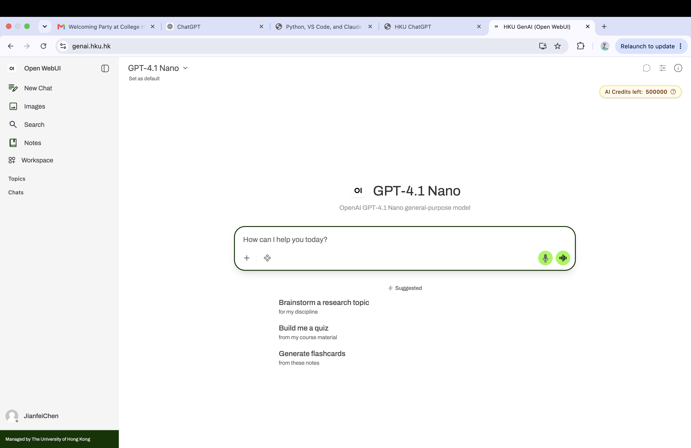
Part 1: Installing Python
Install Python from the official website, choose the right version, and make sure Python can be used from VS Code or Terminal.
Python is the programming language runtime. After installation, your computer will be able to run .py files and use Python package tools such as pip.
Step 1: Open the Python Download Page
Go to the official Python download page:
https://www.python.org/downloads/
The official website is the safest place to download Python. Avoid downloading Python installers from random third-party websites, because they may be outdated or modified.
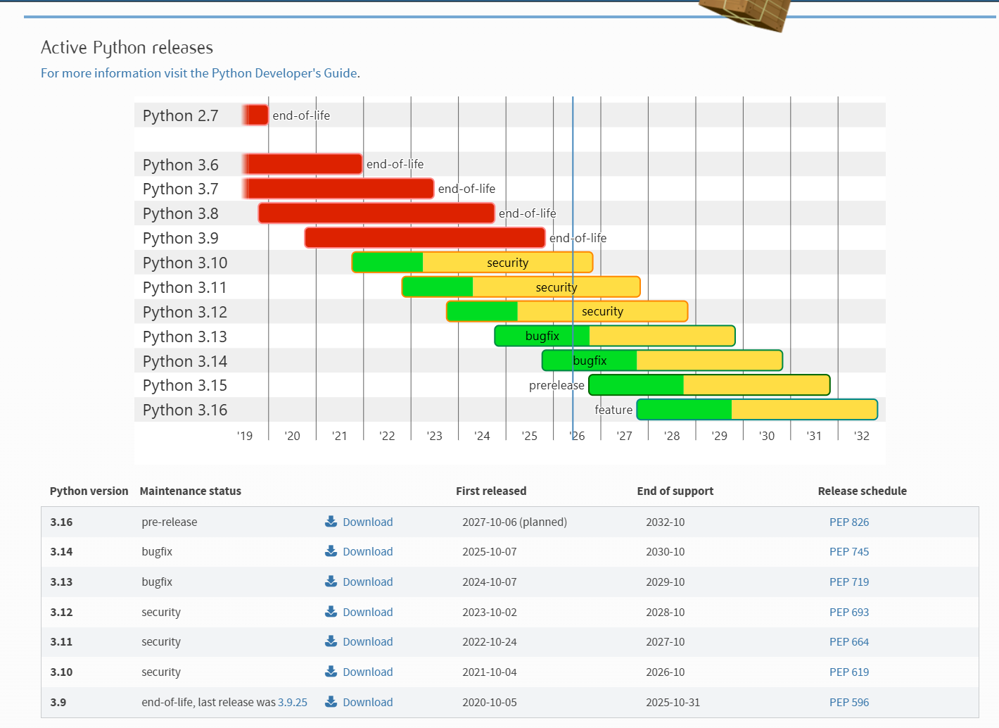
Step 2: Choose a Python Version
In most cases, install the latest stable version of Python.
Some projects may require a specific Python version. Different Python versions can exist on the same computer when needed.
For beginners, the latest stable version is usually the best choice. If a project tells you to use a specific version, follow that project requirement instead.
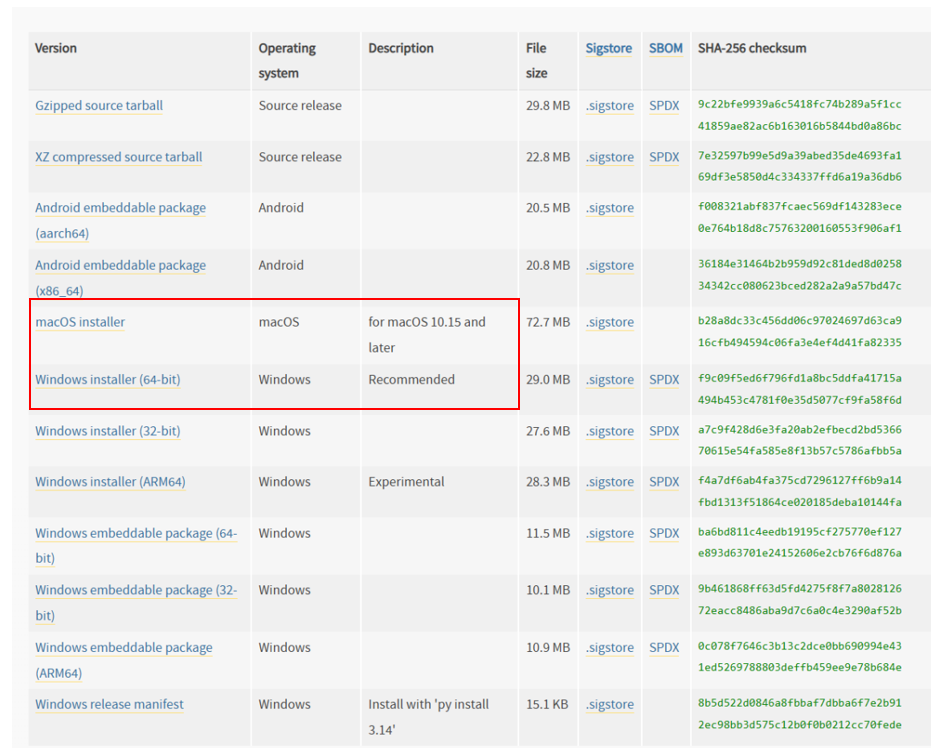
Choose the version you need and install the package that matches your operating system.
For example, Windows users should download a Windows installer, macOS users should download a macOS installer, and Linux users normally install Python through their package manager.
Windows note: Current Python documentation recommends the Python Install Manager. If the main download gives you the Install Manager, install it, open a new terminal, and run
py installto install the latest stable Python runtime. The traditional Windows installer shown in the screenshots below is also acceptable if it is offered on the download page.
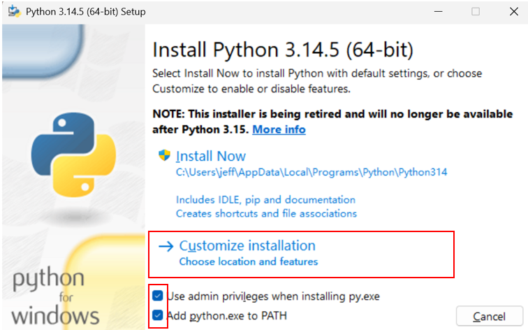
Step 3: Configure the Traditional Windows Installer, if Shown
If you are using the traditional Windows installer shown below, select Add python.exe to PATH so commands such as python can be used directly in VS Code or Terminal. If you installed with the Python Install Manager or you are using macOS or Linux, skip this step.
PATH is a system setting that tells your computer where to find command-line tools. If Python is added to PATH, you can type commands like python, py, or pip without manually opening the Python installation folder.
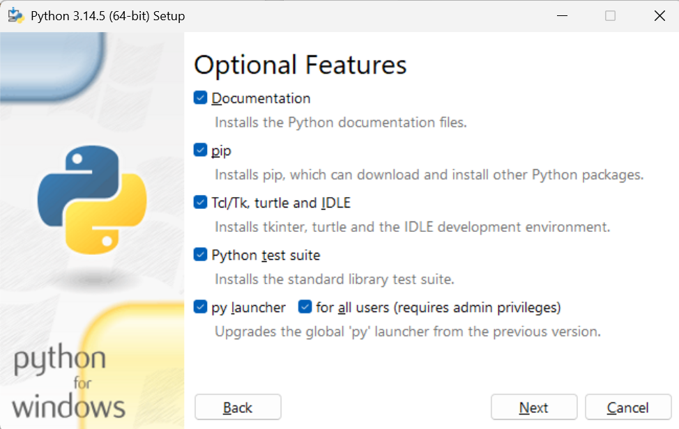
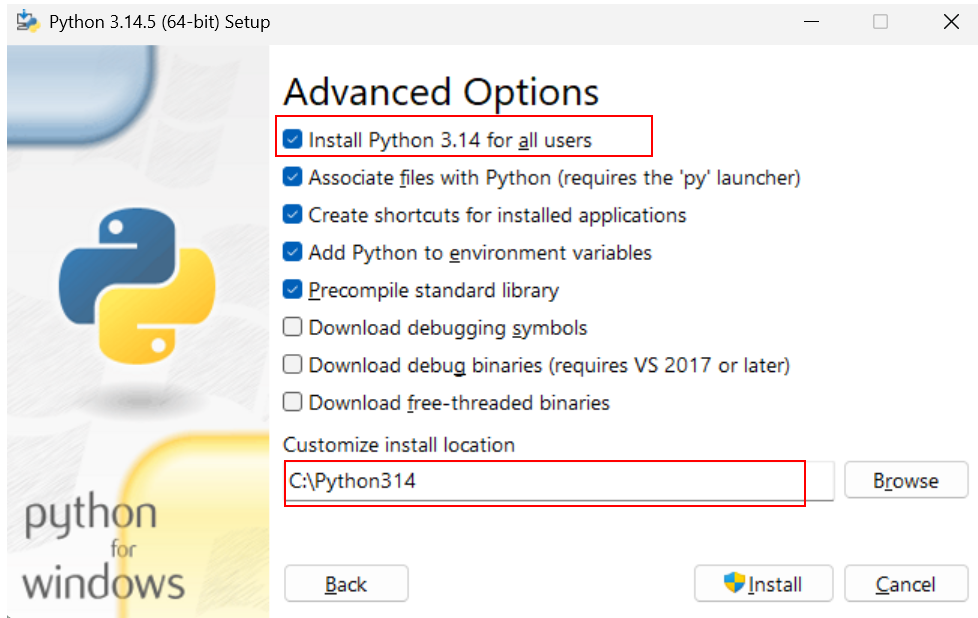
Install for all users makes Python available to other accounts on the same computer.
This option is useful if several users share the same computer. If you are the only user, either option usually works, but installing for all users may require administrator permission.
Note: Use an English-only installation path when possible. Non-English characters in the path may cause problems in some tools.
Step 4: Fix PATH on Windows if Needed
If you used the traditional Windows installer and forgot to add Python to PATH, you can add it manually.
You only need this step if commands such as python --version, py --version, or pip --version cannot be found after installation.
- Open Advanced System Settings on your computer.
- Find Path and open it.
- Add the Python installation location.
If you used the Python Install Manager, first open Manage app execution aliases in Windows Settings and confirm that the Python aliases are enabled. The official Windows troubleshooting page linked at the end of this guide has additional checks.
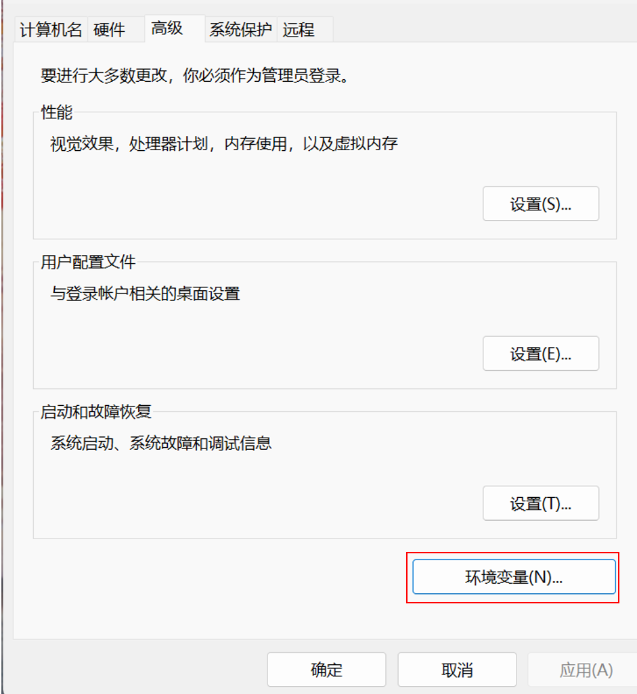
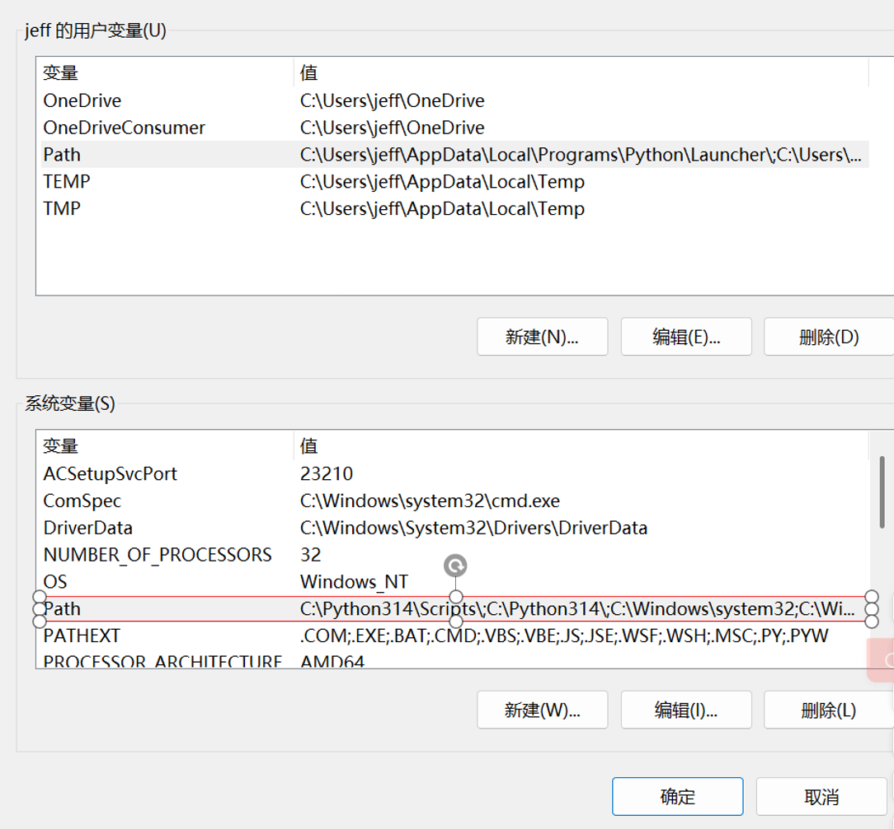
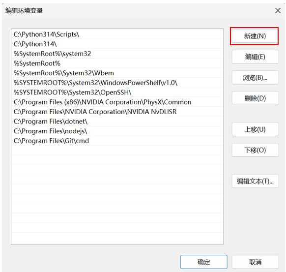
Step 5: Check the Python Installation
Use the commands for your operating system. On macOS or Linux, open Terminal or the VS Code terminal and run:
python3 --version
python3 -m pip --versionOn Windows, open PowerShell, Command Prompt, or the VS Code terminal and run:
py --version
py -m pip --versionUsing python3 -m pip or py -m pip makes sure that pip belongs to the same Python installation you just checked. This is more reliable than running pip by itself when several Python versions are installed.
If both commands show version numbers, Python and pip are installed correctly. If a command is not found, check whether Python was installed correctly and added to PATH.
Part 2: Installing and Introducing VS Code
Install VS Code, learn the main interface areas, and understand the menus commonly used by Python beginners.
VS Code is the editor where you write, organize, run, and debug code. It becomes especially useful after installing extensions such as Python and Jupyter.
Step 1: Download VS Code
Go to the official VS Code download page:
https://code.visualstudio.com/download
Choose the installer that matches your operating system.
Use the stable version unless you specifically need an insider or preview build. The stable version is recommended for everyday coding and teaching.
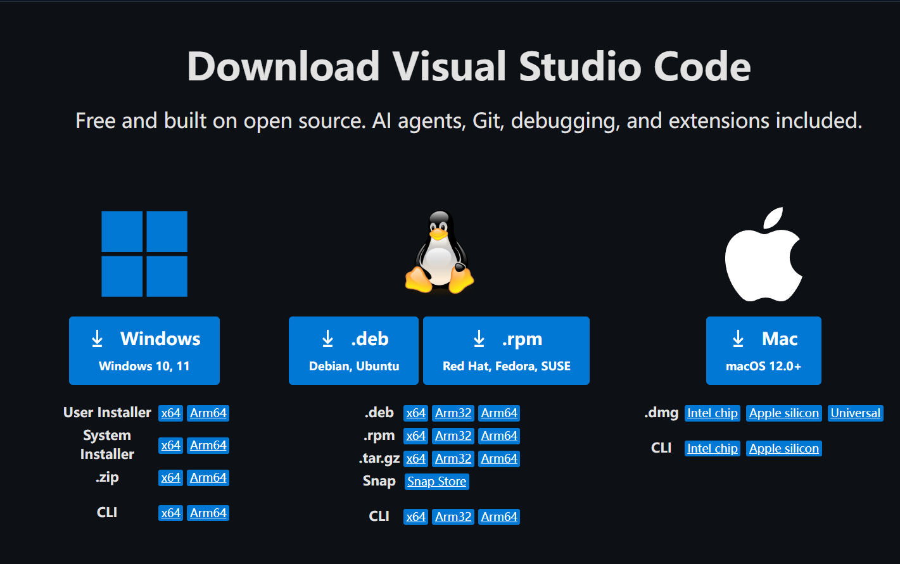
Step 2: First Look at VS Code
If this is your first time opening VS Code, the interface may look similar to the screenshot below.
The most important areas are the left Activity Bar, the Explorer sidebar, the editor area, and the integrated terminal. You do not need to understand every button at the beginning.
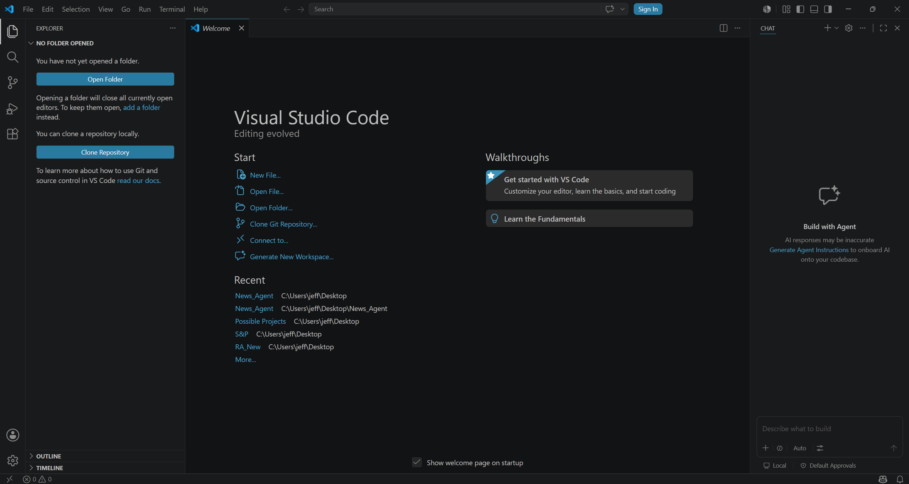
Step 3: Understand the Main Interface Areas
Explorer
Most of the time, VS Code is used for one project at a time. Open the project folder in VS Code, then edit the files from the Explorer.
The Explorer shows all files and folders in your project. A good habit is to create one folder for each project, then open that folder with File -> Open Folder.
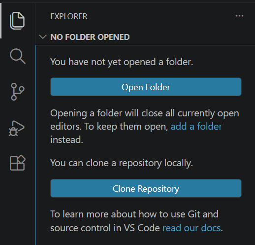
Search
When a project has many files, Search helps you quickly find code, text, or filenames.
Search is useful when you remember a function name, variable name, error message, or keyword but do not remember which file contains it.
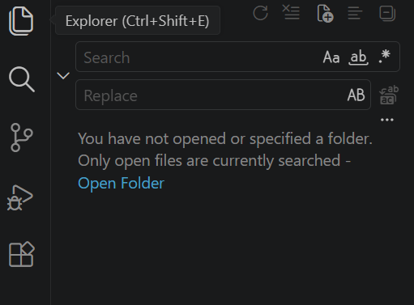
Extensions
VS Code supports many extensions, such as Python, Jupyter, and Claude Code for VS Code. Extensions connect VS Code with powerful development tools.
After installing a new extension, reopen VS Code if the extension asks you to reload.
Recommended extensions for Python beginners:
- Python by Microsoft: provides Python language support, running, debugging, and environment selection.
- Jupyter by Microsoft: allows you to work with Python notebooks.
- Claude Code for VS Code by Anthropic: allows you to use Claude Code inside VS Code. The current extension requires VS Code 1.98.0 or later.
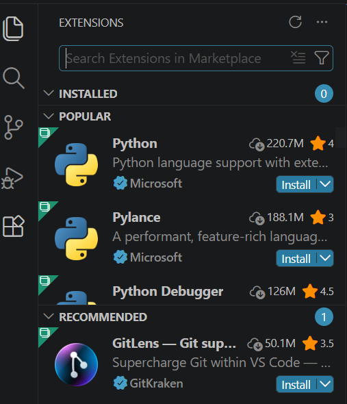
Step 4: Useful VS Code Menus for Python Beginners
| Menu | Main Function | Useful Tip for Python Beginners |
|---|---|---|
| File | Manages files, folders, and windows. | To start a Python project, choose File -> Open Folder, then select your project folder. |
| Edit | Helps you edit text in the editor. | Common shortcuts include Ctrl + Z for undo, Ctrl + C for copy, Ctrl + V for paste, and Ctrl + F for find. |
| Selection | Controls text selection and cursor behavior. | This is not used often at the beginning, but it becomes useful when editing many lines at once. |
| View | Controls what parts of the VS Code interface are displayed. | If you cannot find the terminal, choose View -> Terminal. |
| Go | Helps you quickly jump to different places in your project. | This is useful when your project becomes larger and has many files. |
| Run | Runs and debugs your program. | Use this menu to run a Python file or debug your code step by step. |
| Terminal | Opens the command line inside VS Code. | On macOS/Linux, use python3 --version or python3 test.py. On Windows, use py --version or py test.py. |
| Help | Provides help and information about VS Code. | Use this menu when you need official help or want to check your VS Code version. |
Part 3: Installing Claude Code with DeepSeek API in VS Code
Install Claude Code, connect it with VS Code, and configure the DeepSeek API through CC Switch.
Claude Code is a coding assistant that can help you understand code, edit files, run commands, and work inside a project. In this guide, Claude Code is configured to use the DeepSeek API through CC Switch.
Prerequisites
- macOS 13.0 or later, or Windows 10 version 1809 or later
- VS Code 1.98.0 or later
- A DeepSeek account, API Key, and sufficient API balance
- A Terminal or command prompt
- Homebrew on macOS, or WinGet on Windows
- A network environment that can access the selected package manager
Installation note: Anthropic recommends its native installer. This course guide instead uses Anthropic's official Homebrew and WinGet packages, which are straightforward to update and do not require Node.js or npm. The DeepSeek and CC Switch configuration later in this guide is a third-party provider setup, not Anthropic's official login flow. API usage is billed by DeepSeek under its own pricing and terms.
Step 1: Install the VS Code Extension
Open the Extensions panel in VS Code, then search for and install Claude Code for VS Code. Confirm that the publisher is Anthropic, or use the official Visual Studio Marketplace page.
The VS Code extension provides the editor-side integration. The command-line Claude Code tool is installed separately in a later step.
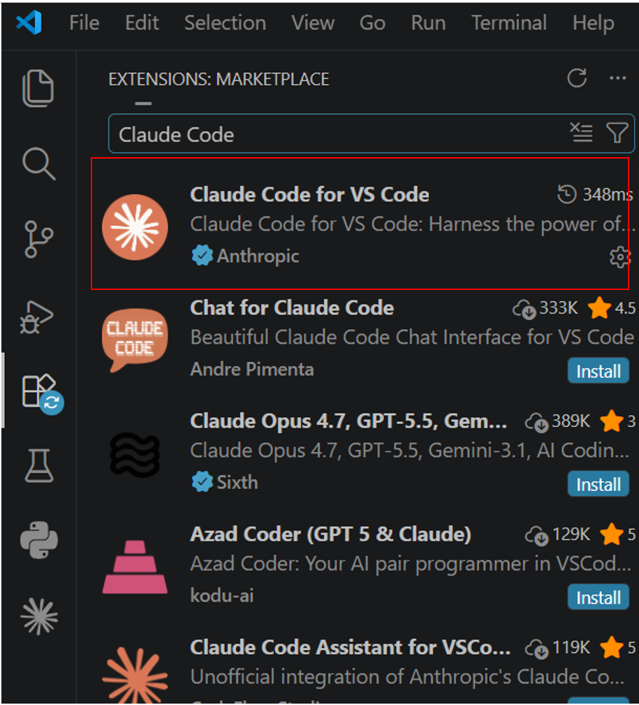
Step 2: Install Claude Code
Use the package-manager command for your operating system. Do not add sudo to any command below.
macOS: Install with Homebrew
First, check whether Homebrew is installed:
brew --versionIf the command is not found, install Homebrew by following the instructions at https://brew.sh, then reopen Terminal.
Homebrew provides two Claude Code release channels. Choose one of them:
| Channel | Installation Command | When to Choose It |
|---|---|---|
| Stable | brew install --cask claude-code | Recommended for most students. It is usually about one week behind and skips releases with major regressions. |
| Latest | brew install --cask claude-code@latest | Use this if you need new releases as soon as they are published. |
For the stable channel, run:
brew install --cask claude-codeFor the latest channel, run instead:
brew install --cask claude-code@latestAfter running the installation command, enter claude --version. A successful macOS installation should show output similar to the following screenshot. The exact version number may be different.
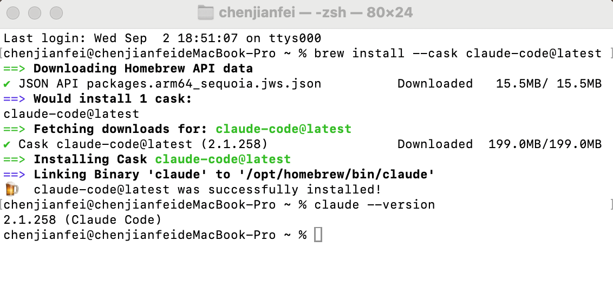
Do not install both channels. Homebrew installations do not update automatically by default, so update Claude Code yourself periodically with the command matching the channel you installed:
# Stable channel
brew upgrade claude-code
# Latest channel
brew upgrade claude-code@latestWindows: Install with WinGet
Open PowerShell or Command Prompt and run:
winget install Anthropic.ClaudeCodeAfter the installation finishes, restart PowerShell or Command Prompt if requested, then enter claude --version. A successful Windows installation should show output similar to the following screenshot. The exact version number may be different.
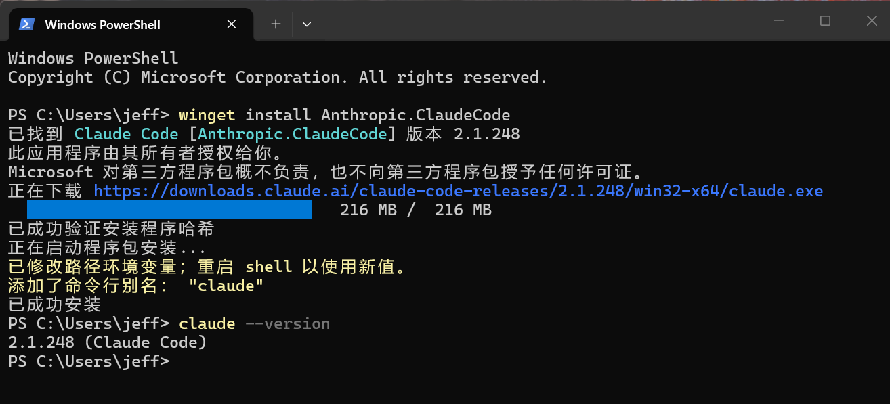
If winget is not found, install or update App Installer from the Microsoft Store, then reopen the terminal.
WinGet installations also do not update automatically by default. Check for and install Claude Code updates periodically:
winget upgrade Anthropic.ClaudeCodeUnlike Homebrew on macOS, the WinGet instructions do not provide separate stable and latest package names.
Step 3: Verify the Installation
Close and reopen Terminal if necessary, then run:
claude --versionIf the command prints a version number followed by (Claude Code), the installation succeeded. If claude is not found, restart Terminal and try again.
After completing the CC Switch configuration in the next step, open your project folder in VS Code, open its integrated Terminal, and run:
claudeIf you see an interface similar to the screenshot below, Claude Code is ready to use.
For a more detailed, read-only installation and settings check, run:
claude doctor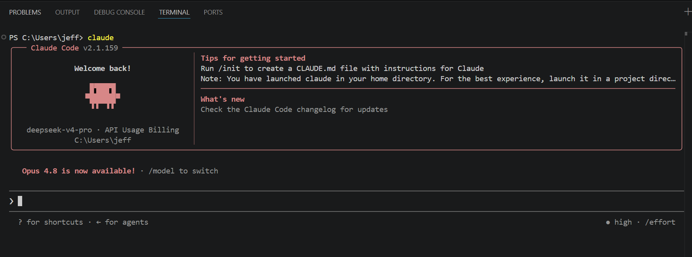
Step 4: Install CC Switch and Configure the DeepSeek API
CC Switch is used to switch Claude Code to the DeepSeek API.
Without this configuration, Claude Code may try to use its default API connection. CC Switch writes the provider settings that route Claude Code requests to DeepSeek instead.
Security note: CC Switch is a community-maintained, open-source application; it is not an Anthropic or DeepSeek product. Download it only from the official project website or GitHub repository. Your API key is a secret stored on your computer: never paste it into course submissions, screenshots, chat messages, or source files.
Project URL:
https://ccswitch.io · https://github.com/farion1231/cc-switch
Open the project's Releases page, expand Assets, and download the installer that matches your operating system.
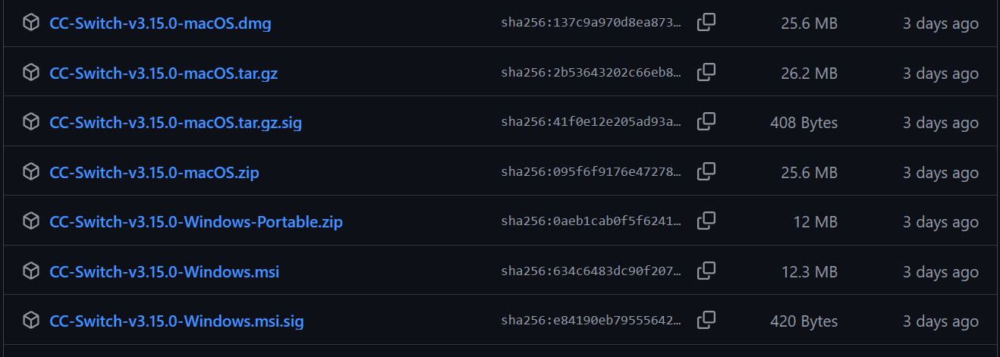
Installer options:
| Operating System | Installer |
|---|---|
| macOS | Choose the file ending in .dmg |
| Windows | Choose the file ending in .msi |
On macOS, you may alternatively install CC Switch with Homebrew:
brew install --cask cc-switch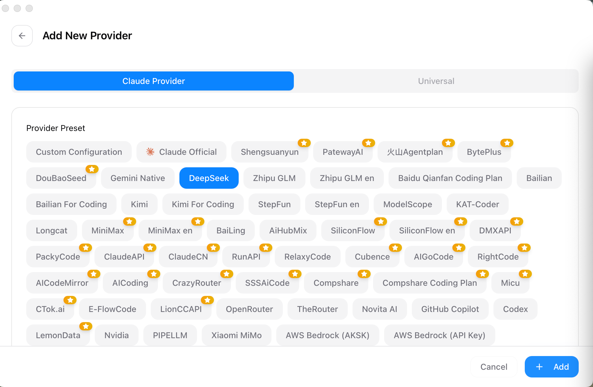
After opening CC Switch, make sure Claude Code is the selected application. Then:
Recommended provider: We recommend using DeepSeek for this course, and the steps below use DeepSeek as the example. However, CC Switch also supports other model providers, such as Kimi. You may choose another provider if you prefer; select its preset and enter the API Key issued by that provider. The configuration fields may vary slightly between providers.
For the recommended DeepSeek setup:
- Click Add Provider.
- Stay on Claude Provider and select the DeepSeek preset.
- Enter your DeepSeek API Key. The preset fills in the endpoint and current model settings.
- Click Add to save the provider.
- Find the new DeepSeek provider card and click Enable. Saving alone does not activate it.
Make sure there are no extra spaces before or after the API key when you paste it.
Create or manage your DeepSeek API Key here:
https://platform.deepseek.com/api_keys
Note: A DeepSeek API Key is shown in full only once when it is created. Save it immediately after creating it.
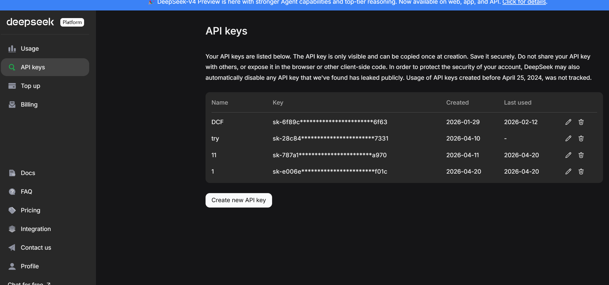
Finish Setup
Open your project folder in VS Code, open the integrated Terminal, and run claude. Enter a simple test request. If Claude Code responds normally, the DeepSeek provider is active.
If Claude Code still asks you to sign in or shows an onboarding wizard, open CC Switch -> Settings -> General, enable Skip Claude Code first-run confirmation, close Claude Code, and start it again. This setting skips the official onboarding screen; it does not create an Anthropic account.
If the test fails, check these items in order:
- Run
claude doctorand resolve any installation warning. - Confirm that the DeepSeek provider card is marked active in CC Switch.
- Confirm that the API key has no extra spaces and that the DeepSeek account has API balance.
- Close and reopen the terminal, then run
claudeagain.
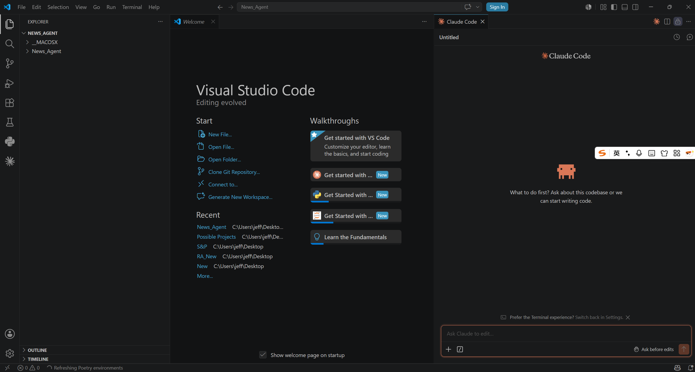